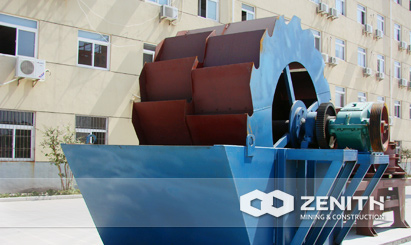
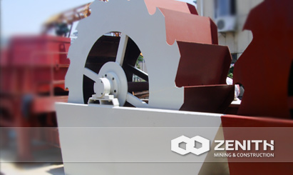
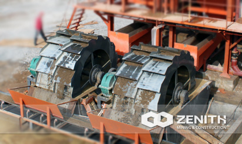
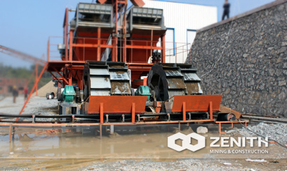

- 
- 
- 
- 
XSD Sand Washing Machine
XSD Sand Washing Machine is a kind of cleaning equipment of international advanced level for sand and slag pellets, it is developed on the basis of introducing foreign outstanding technology of the same kind of products.Sand washing machine is widely used for cleaning materials in the following industries: quarry, minerals, building materials, transportation, chemical industry, water conservation and cement mixture station and so on.
XSD Sand Washing Machine Benefits and advantages
- Simple structure.
- The bearing device of impeller drive is separated from water and materials with water, to avoid the damage of the bearing.
- New sealing structure and reliable transmission device.
- Reasonable structure.
- High capacity, low power consumption.
- Easy structure, stable operation.
The tacnology data
| Model | Impeller (mm) | Max Feeding (mm) | Capacity (t/h) | REV (r/min) | Power (kw) | Motor Model | Machine Size (mm) |
|---|---|---|---|---|---|---|---|
| XSD2610 | Φ2600×1000 | ≤10 | 20-60 | 1.178 | 8-7.5 | Y160L-8/7.5 | 3255×1982×2690 |
| XSD3016 | Φ3000×1600 | ≤10 | 70-120 | 1.179 | 8-15 | Y200L-8/15 | 3845×3000×3080 |